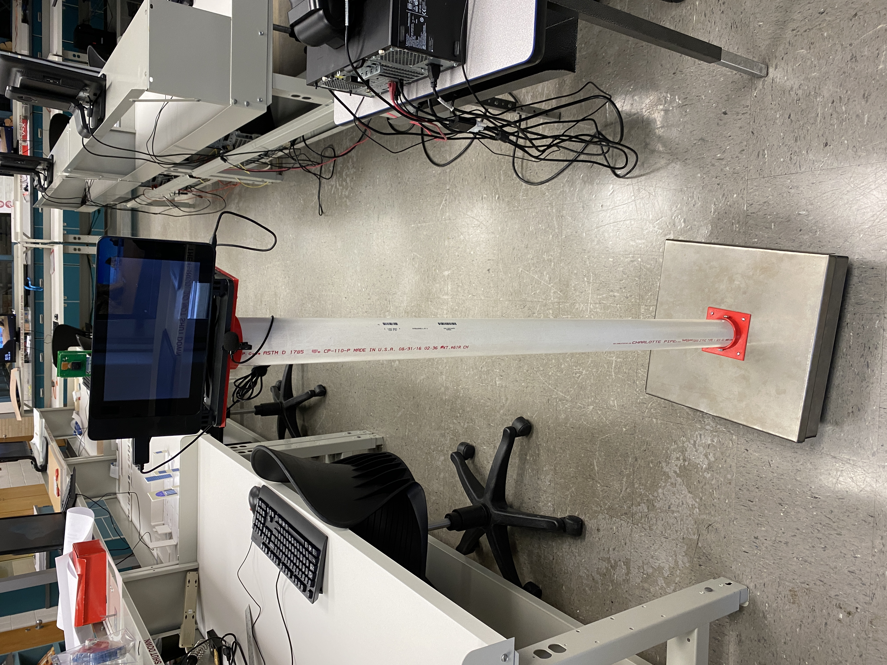
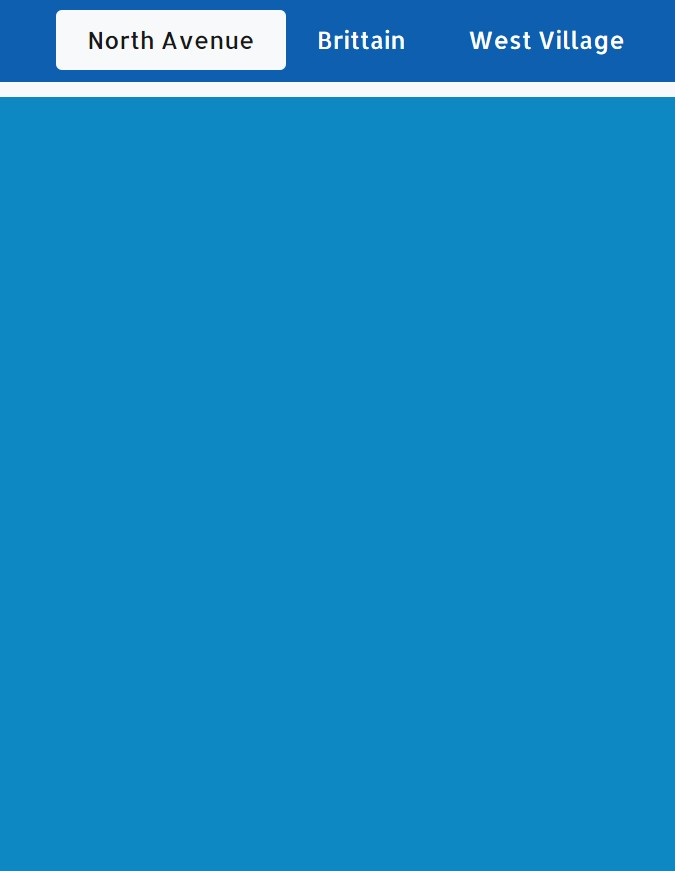
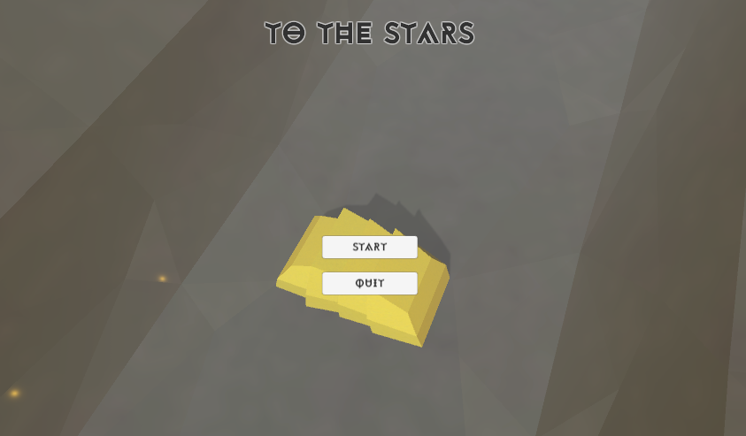
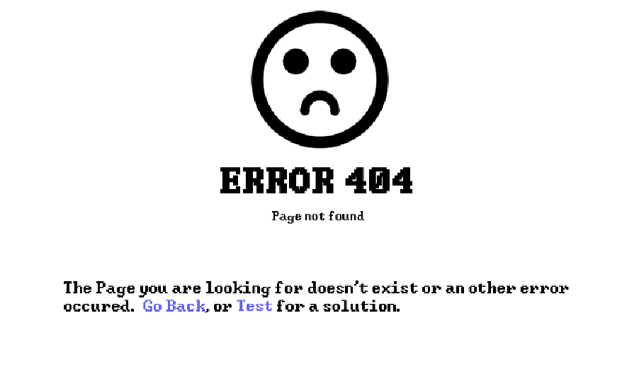
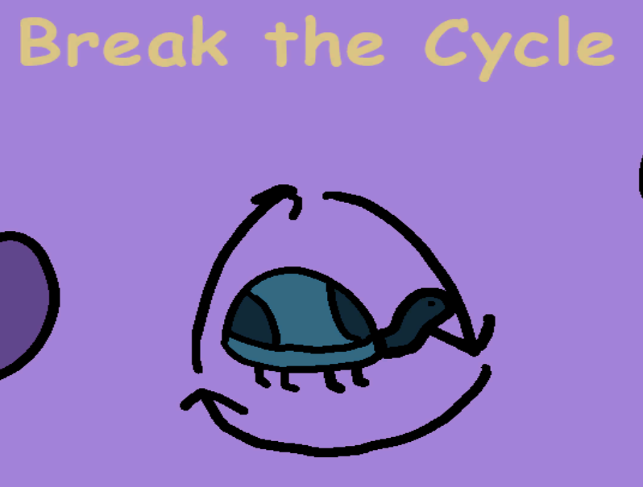

| LEA (Law Enforcement Assistant)
Project LEA was a robot I developed to assist law enforcement officials with the administration of routine traffic stops. The version pictured to the right was Mark 1.0. For Mark 1.0 I wrote the software that controlled the robot's behaviour as well as oversaw and designed the physical hardware and electrical systems of the robot. This version was also presented as a pre-MVP to a pannel of judges under the Pennsylvania Governor's STEM competition. In the future, I hope to build a Mark 2.0 of this robot as the development of Mark 1.0 revealed a good number of design flaws that I would love to fix in a second iteration. A few of such flaws are 1) lack of mobility, 2) inability to fit on a police car effectively, and 3) inconsistency of movement. |
 |
|---|---|
| InForMeal
InForMeal was my team's submission to the 2021 HackGT 8 hackathon. The app was meant to serve as a crowdsourcing platform for dining hall information. Specifically, the app was meant to inform users what food was actually at the dining halls. In short, the app worked as a QR code on would scan to bring up three quick yes or no questions about whether or not a specific food item was actually at the dining hall. On the team, I was the backend developer. I built the backend in Django and (while the app was running) automatically populated the food selection of each dining hall using the GT Dining API. My favorite addition to the project, however, was the algorithm I used to weigh the trustworthyness of each user using a weighted average classical machine learning algorithm. Overall, our team did well placing winning the NSA zero-trust application prize. (Unfortunately I did not get a picture of the application while it was running so all I have to show in the picture is the base UI) |
 |
| To The Stars To The Stars is the game I created for the Space Jam Gamejam. This jam lasted a week and I created all assets used in the project. This was my first gamejam submission that was not an arcade game, but instead an exploration game where you are tasked with saving a species of bug from extinction on the planet XE-13-2-2. Overall, I enjoyed making this game and the longer time frame gave me a good amount of time to make creative decisions regarding the direction and asthetic of the game. However, if I where to make the game again, I would definitely fix a few camera bugs and alter the mouse pointer. After reading the comments on the game, I realized that people did not like their mouse cursor being a white dot. This game placed 8th in the overall category of the game jam. |
 |
| ERROR 404: The Game
ERROR 404: the Game was my first ever released game. I made this game for the 46th Ludum Dare during the compo. I created all code, music, and art assets for this project. |
 |
| Break The Cycle
Break the Cycle was my second released game. I made this game for the 47th Ludum Dare during the compo. For this game I only had about 12 hours to fully develop the game, but during that time I created all of the game's code, music, and art assets. |
 |